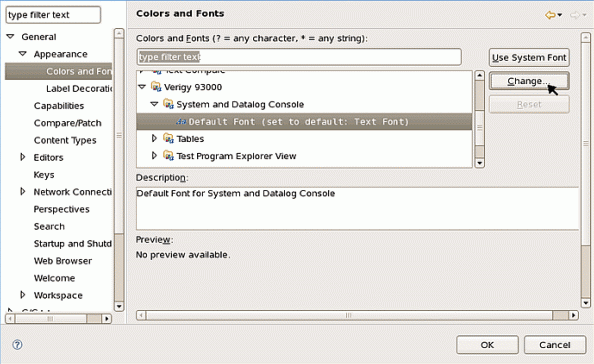
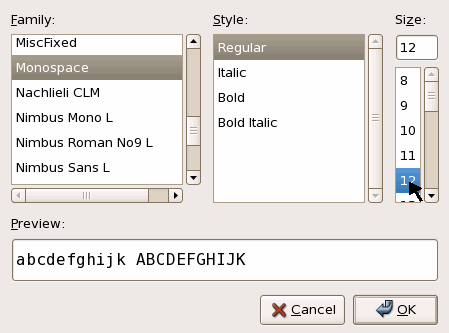
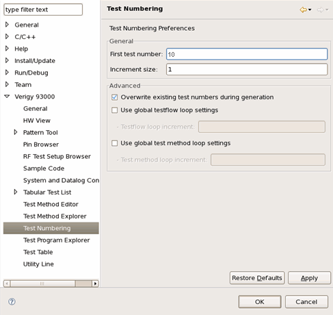

Changing Preferences
You can change the general preference and the 93000 customized preference of your workspace. The following example changes the font of the System and Datalog console and the 93000 test number setting.
Procedures
Change the General preference
- Click .
- In the Preferences window, navigate to , click the Change button on the right side.

- Select the Font you want to see on the Console and click OK.

Change the 93000 customized preference
- In the Preferences window, navigate to .
- Change the First test number to 10 and click OK.

Functional changes
- Introduced before SmarTest 6.3.2